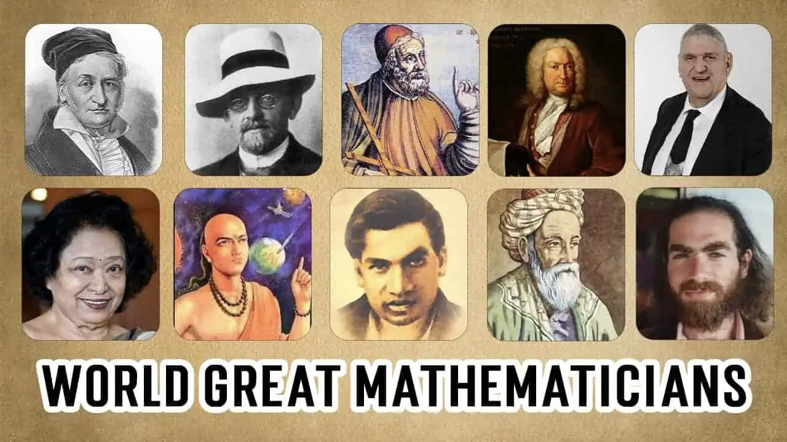

Have you ever wondered where the word mathematics comes from?
The word actually has a fascinating history! It originated from the ancient Greek word “mathema” (μάθημα),
which means knowledge, study, or learning.
The Greeks believed that mathematics wasn’t just about numbers,
it was about understanding the hidden patterns and logic behind the universe.
When you solve an equation or calculate a tricky problem, you’re taking part in a tradition that’s thousands of years old!
The famous Greek philosopher Pythagoras (yes, the same one from the Pythagoras theorem) even started a school where math was
taught as a way of life not just a subject. He believed numbers held spiritual meaning and could explain harmony in music, art, and nature.
Fast forward to today, and we still use math to make sense of our world from counting stars in galaxies to coding apps on our phones.
So the next time you sit in a math class, remember you’re part of a global legacy of thinkers and dreamers who used math to uncover the secrets of the universe.
Fun Fact:
The ancient Egyptians used math to build the pyramids perfectly in line with the stars without calculators or computers! How cool is that?